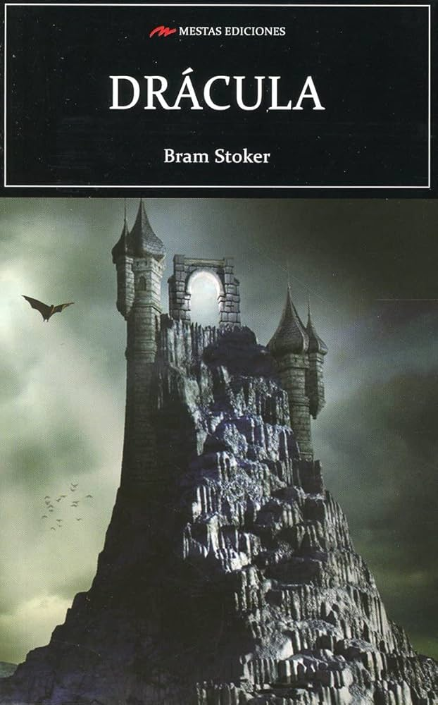
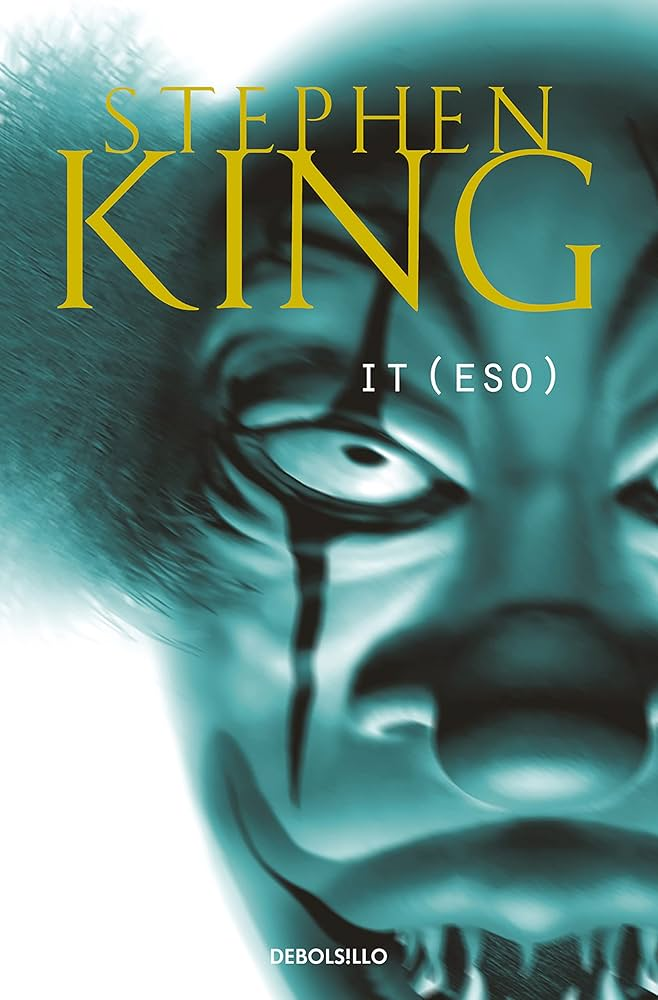
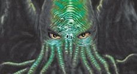

MONSTER
El terror de monstruos se centra en criaturas aterradoras y peligrosas que amenazan a los humanos. Es uno de los subgéneros más populares del cine y la literatura.
Cine: Alien
La tripulación de una nave espacial debe sobrevivir a una letal criatura extraterrestre.
Cine: La Cosa (The Thing)
Un organismo capaz de imitar a cualquier ser vivo siembra el terror en una base antártica.
Cine: Godzilla
Un gigantesco monstruo emerge para destruir ciudades enteras.
Cine: Un Lugar Tranquilo
Criaturas con un oído extremadamente sensible cazan a cualquier ser que haga ruido.
Libro: Frankenstein
La historia del monstruo creado por Victor Frankenstein, una de las criaturas más famosas de la literatura.

Libro: Drácula
El legendario vampiro que aterroriza a sus víctimas en una de las novelas de terror más influyentes.

Libro: It
Una entidad monstruosa que adopta distintas formas para alimentarse del miedo.

Libro: La llamada de Cthulhu
Un antiguo ser cósmico amenaza la cordura y la existencia de la humanidad.